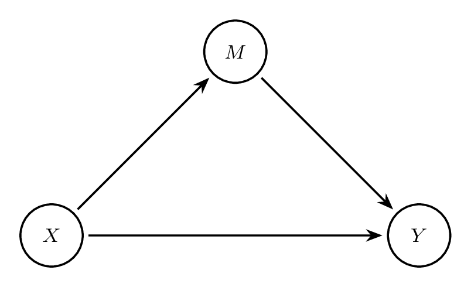
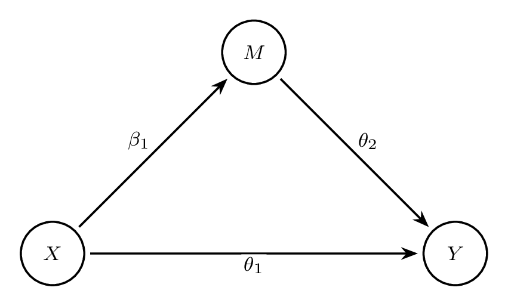
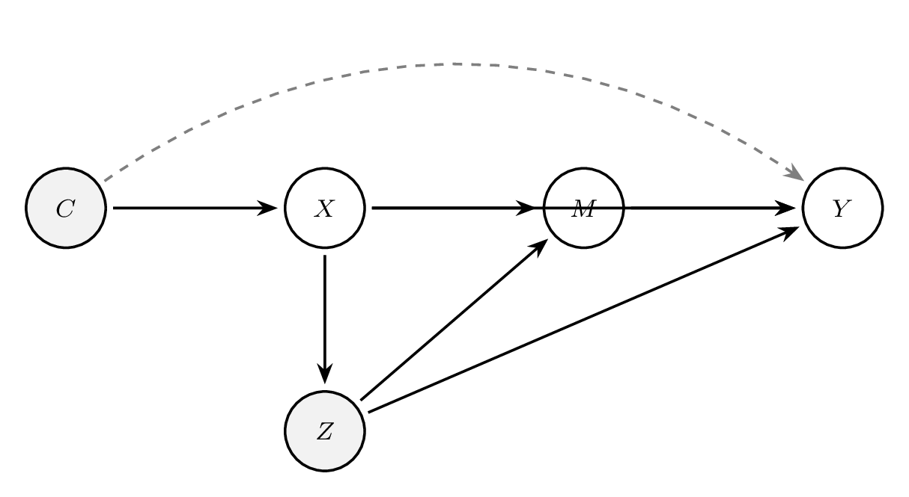
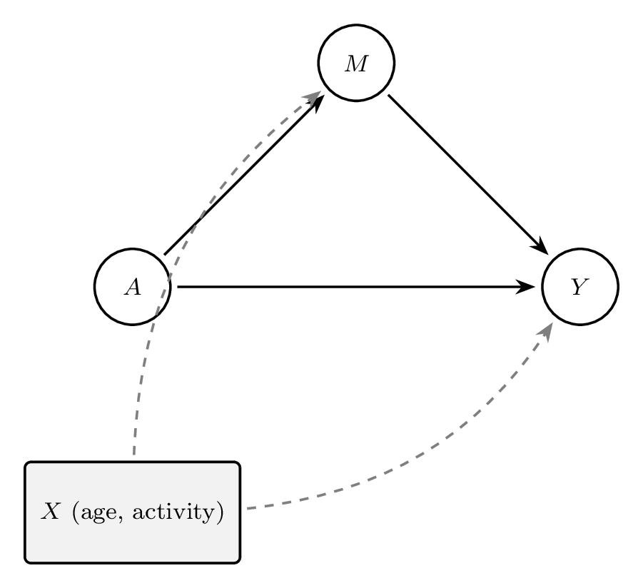
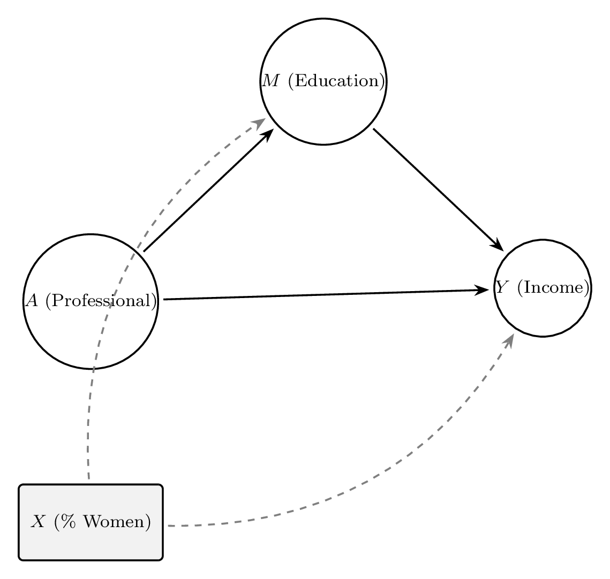

7 Mediation Analysis
So far we have considered causal effects of a treatment on an outcome when a covariate is not on the causal pathway. Covariates that are on the causal pathway are termed “mediators”. They are so named because a cause (e.g., the treatment) affects the mediator that, in turn, affects the outcome. In this chapter, we will (i) explore the role of mediators in causal analyses, (ii) describe statistical techniques for estimating causal effects in the presence of mediators, and (iii) understand how to interpret the various effect estimates.
7.1 Introduction to Mediation
7.1.1 Motivation and Overview
In causal inference, we often seek not only to estimate the total effect of an exposure or treatment on an outcome but also to understand the mechanisms through which this effect operates. Mediation analysis allows us to decompose the total effect into components that correspond to different causal pathways. This is particularly important in biomedical, social, and behavioural sciences, where identifying how and why a treatment works can inform intervention design, policy decisions, and scientific understanding.
For example, suppose a new drug improves patient outcomes. We may want to know whether the improvement occurs primarily by reducing inflammation, improving immune function, or some other biological process. Mediation analysis aims to quantify how much of the treatment’s effect is explained by a specific intermediate variable—known as the mediator.
7.1.2 Total, Direct, and Indirect Effects
Let \(A\)denote a binary treatment (e.g., 1 for treated, 0 for untreated),\(M\)the mediator (e.g., a biomarker), and\(Y\) the outcome of interest (e.g., disease status). Under the potential outcomes framework, we define:
- \(Y^a\): the potential outcome if treatment is set to \(a\)
- \(M^a\): the potential mediator value under treatment \(a\)
- \(Y^{a, m}\): the potential outcome if treatment is \(a\)and mediator is set to\(m\)
Then, the total effect of treatment on the outcome can be decomposed into: \[ \text{Total Effect (TE)} = \mathbb{E}[Y^1 - Y^0] \] The total effect can be further partitioned into:
- Natural Direct Effect (NDE) : The effect of treatment on the outcome not through the mediator \[ \text{NDE} = \mathbb{E}[Y^{1, M^0} - Y^{0, M^0}] \]
- Natural Indirect Effect (NIE) : The effect of treatment that operates through the mediator \[ \text{NIE} = \mathbb{E}[Y^{0, M^1} - Y^{0, M^0}] \] This decomposition assumes no interaction between the direct and indirect pathways. If such interaction exists, the decomposition still holds but interpretation becomes more nuanced.
7.1.3 Example: Treatment \(\rightarrow\)Mediator\(\rightarrow\) Outcome
Consider a simulated example where a treatment \(A\)affects a continuous mediator\(M\), which in turn affects a continuous outcome \(Y\). The goal is to estimate the total, direct, and indirect effects.
Simulating Data in R
Box 7.1: Simulating data for mediation example
set.seed(123)
n <- 1000
A <- rbinom(n, 1, 0.5) # Binary treatment
M <- 0.5 * A + rnorm(n) # Mediator depends on A
Y <- 0.3 * A + 0.6 * M + rnorm(n) # Outcome depends on A and M
data <- data.frame(A, M, Y)clear all
set seed 123
set obs 1000
gen A = runiform() < 0.5
gen M = 0.5*A + rnormal()
gen Y = 0.3*A + 0.6*M + rnormal()Running Mediation Analysis in R
We can use the mediation package in R to estimate the average causal mediation effect (ACME, equivalent to NIE), average direct effect (ADE, equivalent to NDE), and total effect.
Box 7.2: Estimating ACME, ADE, and total effect with the mediation package
library(mediation)
# Fit mediator model
med.fit <- lm(M ~ A, data = data)
# Fit outcome model
out.fit <- lm(Y ~ A + M, data = data)
# Run mediation
med.out <- mediate(med.fit, out.fit, treat = "A", mediator = "M", boot = TRUE)
summary(med.out)* Install mediation package if needed: ssc install mediation, replace
* Fit mediator model
regress M A
* Fit outcome model
regress Y A M
* Run mediation analysis
medeff (regress M A) (regress Y A M), treat(A) mediator(M) sims(1000)This will return estimates of:
ACME (average causal mediation effect)— the indirect effectADE (average direct effect)— the direct effectTotal Effect = ACME + ADE- Proportion mediated:
ACME / Total Effect
7.1.4 The Role of Causal Thinking in Mediation
Causal mediation analysis relies on several strong assumptions that must be justified with domain knowledge and visualized using causal diagrams (DAGs). The key identification assumptions include:
- No unmeasured confounding between treatment and outcome
- No unmeasured confounding between mediator and outcome
- No confounders of the mediator-outcome relationship affected by the treatment
These assumptions are not testable from data alone. Drawing a DAG helps clarify whether the necessary conditional independencies are plausible and guides appropriate adjustment strategies.
Example DAG
This simple DAG illustrates the decomposition of the total effect into a direct path (\(A \rightarrow Y\)) and an indirect path (\(A \rightarrow M \rightarrow Y\)). Any omitted arrows (e.g., from unmeasured confounders) must be considered when evaluating the validity of the assumptions.
7.1.5 Summary
Mediation analysis helps disentangle causal pathways by estimating direct and indirect effects. These analyses can be highly informative but require strong assumptions and careful modeling. In the next sections, we discuss identification strategies, estimation approaches, and practical tools for mediation analysis in computational causal inference.
7.2 Approaches to mediation analysis
7.2.1 Classic regression approach
Consider the causal diagram in Figure 7.1 with exposure X, mediator M, and outcome Y (for simplicity, assume there are no confounders). There are two effects of X on Y that can be measured in this scenario: the direct effect (DE) and the indirect effect (IE). The direct effect (i.e., \(X \rightarrow Y\)) is the effect of the exposure on the outcome that is not through the mediator. The indirect effect is the effect of the exposure on the outcome that operates through the mediator (i.e., \(X \rightarrow M \rightarrow Y\)).

Early proponents of evaluating this model suggested using the “product of coefficients method” (also known as “product method”) (Baron and Kenny, 1986). Let M and Y be continuous variables, consider the following regression models: \[ E(M \mid X=x) = \beta_{0} + \beta_{1}x \tag{7.1}\] \[ E(Y \mid X=x, M=m) = \theta_{0} + \theta_{1}x + \theta_{2}m \tag{7.2}\]
Equation 7.1 is the regression model for the mediator. The coefficient \(\beta_{1}\) is the expected increase in the value of the mediator for a unit increase in the exposure (for a binary exposure this coefficient would be the difference in means between two treatment groups).
Equation 7.2 is the regression model for the outcome. Baron and Kenny proposed that the coefficient \(\theta_{1}\)is the direct effect of\(X \rightarrow Y\), which is the effect of the exposure on the outcome at a fixed level of the mediator variable (e.g., at the reference level). The coefficient \(\theta_{2}\) is the effect of the mediator on the outcome at a fixed level of the exposure variable.
Baron and Kenny also proposed that the indirect effect be calculated by estimating \(\beta_{1}\theta_{2}\). The indirect effect is the effect on the outcome of changes of the exposure which operate through mediator levels.
To illustrate this, consider Figure 7.2 below. The arrows have now been labelled with their respective coefficients from Equation 7.1 and Equation 7.2

This classic regression approach can accommodate simplistic causal diagrams. However, this approach has its drawbacks. Firstly, in more complex scenarios, the mediator could be a collider between the exposure and an unmeasured variable (see lecture on causal diagrams). Therefore, adjusting for the mediator (e.g., in Equation 7.2) would induce an association between the exposure and the unmeasured variable (something we do not want to do!). Other complex scenarios could also incorporate interactions or non-linear terms for certain covariates. Secondly, the techniques used in this classic regression approach does not easily carry over into non-linear regression models, such as non-collapsibility. For example, consider the mediator was continuous and the outcome was binary. The product between the coefficients (i.e., \(\beta_{1}\theta_{2}\)) would be a combination of a mean difference (i.e., \(\beta_{1}\)) and a log-odds ratio (i.e., \(\theta_{2}\)) - something that is very difficult to interpret! In the next section (Counterfactual approach) we will explore an alternative approach to estimating direct and indirect effects, which is more commonly used today and is the preferred approach.
Controlled direct effect
Before introducing the Counterfactual Approach, it is important to familiarise yourself with another estimand that is often of interest. Another commonly used measure of interest is the controlled direct effect (CDE). The controlled direct effect expresses how much the outcome would change on average if the mediator were fixed at level \(m\)uniformly in the population but the treatment were changed from level\(x=0\)to level\(x=1\). Consequently, there are as many controlled direct effects as there are levels of the mediator.
The CDE corresponds to a situation in which a hypothetical intervention controls the mediator to a given value, whereas the direct effect corresponds to a situation in which the natural relationship between the exposure and the mediator is maintained (i.e., we would intervene on the exposure but not directly on the mediator).
The CDE and the direct effect is equivalent when there is no interaction between the exposure and the mediator (see Richiardi et al 2013, for further explanation). To illustrate this concept, consider again the model for the mediator (which is the same as Equation 7.1) \[ E(M \mid X=x) = \beta_{0} + \beta_{1}x \]
and now a model for the outcome that includes an interaction between the exposure and the mediator \[ E(Y \mid X=x, M=m) = \theta_{0} + \theta_{1}x + \theta_{2}m + \theta_{3}xm \tag{7.3}\]
Using Equation 7.1 and Equation 7.3, the CDE, DE, and IE can be estimated as follows (where \(x\)is exposed and\(x^{*}\) is not exposed): \[ \begin{aligned} \operatorname{CDE}(m) & =\left(\theta_{1}+\theta_{3} m\right)\left(x-x^{*}\right) \\ D E & =\left(\theta_{1}+\theta_{3} \beta_{0}+\theta_{3} \beta_{1} x^{*} \right)\left(x-x^{*}\right) \\ I E & =\left(\theta_{2} \beta_{1}+\theta_{3} \beta_{1} x\right)\left(x-x^{*}\right) \end{aligned} \] Notice that, in Equation 7.3, if the interaction is absent, such that \(\theta_{3} = 0\), then the CDE and DE would be equivalent: \[ \begin{aligned} \operatorname{CDE}(m) & =\left(\theta_{1} \right)\left(x-x^{*}\right) \\ D E & =\left(\theta_{1} \right)\left(x-x^{*}\right) \end{aligned} \] To explain this concept further, if the direct effect of the exposure is constant for the different levels of the mediator, then setting the mediator to a fixed value (i.e., CDE) would give the same estimate. Similarly, setting the value that the mediator would have taken at the reference level of the exposure (i.e., DE) would also give the same estimate.
There is a difference in the interpretation of the CDE and DE even in the absence of the interaction. As an example, consider a hypothetical study on poor diet (exposure), obesity (mediator), and heart disease (outcome). The CDE (for obesity = 0) is the effect of eliminating poor diet when controlling obesity to be absent. For the DE, obesity would be set at the value that would have been observed in the absence of poor diet.
7.2.2 Counterfactual approach
To introduce the counterfactual approach notation in mediation analysis, consider again the causal diagram from Figure 7.1 where the exposure is binary but now the mediator is binary. Counterfactual notation defines two potential outcomes not only for the outcome of interest (i.e., Y) but also the mediator (i.e., M). The potential outcomes for the mediator are:
- \(M^{0}\): the value of the mediator had the individual received exposure level \(x=0\).
- \(M^{1}\): the value of the mediator had the individual received exposure level \(x=1\).
Since the mediator is hypothetical (i.e., consists of potential outcomes), the potential outcome notation for the outcome of interest must also accommodate the potential outcomes of the mediator. In mediation analysis, \(Y^{x,m}\)is the potential outcome under exposure level\(X=x\)and mediator level\(M=m\). The potential outcomes are:
- \(Y^{0,M^{0}}\): the value of the outcome had the individual received exposure level \(x=0\)and the mediator taken the value it would have done under exposure level\(x=0\).
- \(Y^{1,M^{1}}\): the value of the outcome had the individual received exposure level \(x=1\)and the mediator taken the value it would have done under exposure level\(x=1\).
- \(Y^{0,M^{1}}\): the value of the outcome had the individual received exposure level \(x=0\)and the mediator taken the value it would have done under exposure level\(x=1\).
- \(Y^{1,M^{0}}\): the value of the outcome had the individual received exposure level \(x=1\)and the mediator taken the value it would have done under exposure level\(x=0\).
Using this potential outcome notation we can define the natural effects (causal estimands) of interest. The natural effects are the natural direct effect (NDE) and the natural indirect effect (NIE), which together sum up to the total effect (TE). If we were to control the mediator at the level seen in the non-exposed group (i.e., \(x=0\)and\(M^{x=0}\)), then:
Natural direct effect \[ E(Y^{1,M^{0}} - Y^{0,M^{0}})\] \[ \frac{E(Y^{1,M^{0}})}{E(Y^{0,M^{0}})}\] Natural indirect effect \[ E(Y^{1,M^{1}} - Y^{1,M^{0}})\] \[ \frac{E(Y^{1,M^{1}})}{E(Y^{1,M^{0}})}\] Controlled direct effect \[ E(Y^{1,m} - Y^{0,m})\] \[ \frac{E(Y^{1,m})}{E(Y^{0,m})}\] Alternatively, if one were interested in using the exposed group as the reference group, then the natural direct effect would be \(M^{1}\)(instead of\(M^{0}\)), and the natural indirect effect would be \(x=0\)(instead of\(x=1\)).
The natural direct effect (NDE) expresses how much the outcome would change, on average, if the exposure were set at level \(x=1\)versus level\(x=0\) but for each individual the mediator were kept at the level it would have taken, for that individual, in the absence of the exposure. The NDE captures what the effect of the exposure on the outcome would remain if we were to disable the pathway from the exposure to the mediator.
The natural indirect effect (NIE) expresses how much the outcome would change, on average, if the exposure were set at level \(x=1\)but the mediator were changed from the level it would take if\(x=0\)to the level it would take if\(x=1\). The NIE captures the effect of the exposure on the outcome that operates by changing the mediator.
Notice that the potential outcome notation for \(Y^{0,M^{1}}\)relies on us knowing what the outcome would have been for an individual in exposure group\(x=0\)but they had the value of the mediator as if they were in the other exposure group (i.e.,\(x=1\)). It is not possible to observe this from the data alone. In the same way, it is not possible for us to observe \(Y^{1,M^{0}}\). We will explore methods of estimating the NDE and NIE in the following sections, but first we must make certain assumptions.
7.2.3 Assumptions
To illustrate the assumptions for mediation analysis, first consider the causal diagram in Figure 7.3 The DAG consists of the exposure (X), mediator (M), outcome (Y), exposure-outcome confounder (\(C\)), and mediator-outcome confounder (\(Z\)). For simplicity, we do not include exposure-mediator confounder but this variable is likely to occur in a wide range of scenarios and should be carefully considered when doing such an analysis.

With such a DAG, and to estimate effects of interest, we need to make certain assumptions. The assumptions relate not only to the relationship between the exposure and the outcome but also the relationships with the mediator:
- No unmeasured exposure-outcome confounders given C
- No unmeasured mediator-outcome confounders given C and A
- No unmeasured exposure-mediator confounders given C
- No unmeasured mediator-outcome confounders affected by the exposure (i.e., no arrow from X to Z)
To estimate the controlled direct effect (CDE), we must assume (1) no unmeasured exposure-outcome confounding. When the treatment is randomised, assumption (1) is automatically satisfied. We also assume (2) no unmeasured mediator-outcome confounding. To estimate the CDE from Figure 7.3, we must control for \(C\)and\(Z\).
For identification of the natural direct and indirect effects, two further assumptions are required. There must also be (3) no unmeasured exposure-mediator confounding, which is automatically satisfied if the exposure is randomised. Lastly, an often strong assumption is that there must be (4) no unmeasured mediator-outcome confounder that is affected by the exposure, this assumption is often called the “cross-world independence assumption”.
Note that randomisation of the exposure is not sufficient to control for confounding in mediation analysis. Randomisation allows controlling for the exposure-outcome and exposure-mediator relationships but it does not ensure no unmeasured mediator-outcome confounding because the mediator is often not randomised.
7.2.4 Controlled Direct Effects vs Natural Direct Effects
While the natural direct effect (NDE) conditions on the natural value of the mediator under no treatment (\(M^0\)), the controlled direct effect (CDE) fixes the mediator to a specific value for all individuals: \[ \text{CDE}(m) = \mathbb{E}[Y^{1, m} - Y^{0, m}] \] This represents the direct effect of treatment when the mediator is held constant at a specified level \(m\). Controlled direct effects are easier to identify since they do not rely on cross-world counterfactuals (like \(Y^{1, M^0}\)).
- CDEs can be interpreted as the effect of treatment if we were able to intervene and fix the mediator.
- NDEs describe the effect when the mediator is allowed to take its natural value under no treatment—more interpretable, but harder to identify.
Implication for Practice
Controlled direct effects are estimable under weaker assumptions but may lack realism unless intervention on the mediator is plausible. Natural direct and indirect effects offer more intuitive interpretations of mediation but require stronger assumptions and careful modeling.
7.3 Estimation of Effects
Several estimation strategies have been developed to quantify mediation effects, ranging from classical regression-based methods to modern counterfactual-based estimators. In this section, we review three major approaches: parametric g-computation, regression-based mediation analysis, and counterfactual-based methods.
7.3.1 Parametric g-computation
The parametric g-computation formula provides a way to estimate causal effects by modeling the outcome and mediator using parametric regression models and then integrating over the empirical distribution of covariates. It is particularly useful when both treatment and mediator are continuous or binary.
Let \(A\)be the treatment,\(M\)the mediator, and\(Y\)the outcome. Suppose we have baseline covariates\(X\). Under the identification assumptions discussed previously, the natural indirect effect (NIE) can be expressed as: \[ \begin{aligned} \text{NIE} =\ & \int \left[ \int \mathbb{E}[Y \mid A=0, M=m, X=x] \, dF_{M \mid A=1, X}(m) \right] dF_X(x) \\ & - \int \left[ \int \mathbb{E}[Y \mid A=0, M=m, X=x] \, dF_{M \mid A=0, X}(m) \right] dF_X(x) \end{aligned} \] This expression can be approximated via Monte Carlo simulation in practice.
R Example: Parametric g-computation
Assume a data-generating process where both the mediator and outcome are continuous:
Box 7.3: Simulating data for parametric g-computation
set.seed(123)
n <- 1000
X <- rnorm(n)
A <- rbinom(n, 1, 0.5)
M <- 0.5*A + 0.3*X + rnorm(n)
Y <- 0.6*M + 0.3*A + 0.2*X + rnorm(n)
data <- data.frame(A, M, Y, X)clear all
set seed 123
set obs 1000
gen X = rnormal()
gen A = runiform() < 0.5
gen M = 0.5*A + 0.3*X + rnormal()
gen Y = 0.6*M + 0.3*A + 0.2*X + rnormal()We fit the mediator and outcome models, then simulate counterfactuals:
Box 7.4: Parametric g-computation estimation of NIE, NDE, and TE
# Fit mediator and outcome models
med_model <- lm(M ~ A + X, data = data)
out_model <- lm(Y ~ A + M + X, data = data)
# Predict mediator under A = 1 and A = 0
data$M1 <- predict(med_model, newdata = transform(data, A = 1))
data$M0 <- predict(med_model, newdata = transform(data, A = 0))
# Predict outcome under various scenarios
Y_0_M1 <- predict(out_model, newdata = transform(data, A = 0, M = data$M1))
Y_0_M0 <- predict(out_model, newdata = transform(data, A = 0, M = data$M0))
Y_1_M0 <- predict(out_model, newdata = transform(data, A = 1, M = data$M0))
Y_0_M0_total <- predict(out_model, newdata = transform(data, A = 0, M = data$M0))
# Compute effects
NIE <- mean(Y_0_M1 - Y_0_M0)
NDE <- mean(Y_1_M0 - Y_0_M0)
TE <- mean(Y_0_M1 - Y_0_M0_total + Y_1_M0 - Y_0_M0)
cat("NIE:", NIE, "\nNDE:", NDE, "\nTE:", TE, "\n")* Fit mediator and outcome models
regress M A X
scalar b0_m = _b[_cons]
scalar bA_m = _b[A]
scalar bX_m = _b[X]
regress Y A M X
scalar b0_y = _b[_cons]
scalar bA_y = _b[A]
scalar bM_y = _b[M]
scalar bX_y = _b[X]
* Counterfactual mediator predictions
gen M_A1 = b0_m + bA_m*1 + bX_m*X
gen M_A0 = b0_m + bA_m*0 + bX_m*X
* Counterfactual outcome predictions
gen Y_0_M1 = b0_y + bA_y*0 + bM_y*M_A1 + bX_y*X
gen Y_0_M0 = b0_y + bA_y*0 + bM_y*M_A0 + bX_y*X
gen Y_1_M0 = b0_y + bA_y*1 + bM_y*M_A0 + bX_y*X
* Compute effects as averages
summarize Y_0_M1, meanonly
local m_Y_0_M1 = r(mean)
summarize Y_0_M0, meanonly
local m_Y_0_M0 = r(mean)
summarize Y_1_M0, meanonly
local m_Y_1_M0 = r(mean)
local NIE = `m_Y_0_M1' - `m_Y_0_M0'
local NDE = `m_Y_1_M0' - `m_Y_0_M0'
local TE = `NIE' + `NDE'
display "NIE: " `NIE'
display "NDE: " `NDE'
display "TE: " `TE'This approach provides a flexible, transparent way to estimate causal mediation effects under parametric assumptions.
7.3.2 Regression-Based Mediation
The classical regression-based approach to mediation, introduced by Baron and Kenny (1986), uses a sequence of linear regressions to assess whether a mediator carries the effect of a treatment to the outcome. This method is simple and interpretable but does not have a formal counterfactual interpretation.
Baron & Kenny Steps
Given a treatment \(A\), mediator \(M\), and outcome \(Y\), the following regressions are fitted:
- Regress \(M\)on\(A\): \(\quad M = \alpha_0 + \alpha_1 A + \varepsilon_M\)
- Regress \(Y\)on\(A\): \(\quad Y = \tau_0 + \tau A + \varepsilon_Y\)
- Regress \(Y\)on\(A\)and\(M\): \(\quad Y = \beta_0 + \beta_1 A + \beta_2 M + \varepsilon_Y\)
If: - \(\alpha_1\) is significant (A affects M), - \(\beta_2\) is significant (M affects Y controlling for A), - and \(|\beta_1| < |\tau|\) (effect of A on Y is reduced when M is added),
then there is evidence of mediation.
R Example
Box 7.5: Baron and Kenny steps for mediation analysis
# Step 1
summary(lm(M ~ A, data = data)) # Effect of A on M
# Step 2
summary(lm(Y ~ A, data = data)) # Total effect
# Step 3
summary(lm(Y ~ A + M, data = data)) # Mediation model* Step 1: Effect of A on M
regress M A
scalar alpha1 = _b[A]
* Step 2: Total effect of A on Y
regress Y A
scalar total_eff = _b[A]
* Step 3: Mediation model (Y ~ A + M)
regress Y A M
scalar beta2 = _b[M]
scalar direct_eff = _b[A]
* Indirect effect = alpha1 * beta2
scalar indirect_eff = alpha1 * beta2
display "Indirect effect (alpha1 * beta2): " indirect_eff
display "Direct effect: " direct_eff
display "Total effect: " total_effThe indirect effect can be approximated as \(\alpha_1 \cdot \beta_2\), and the direct effect as \(\beta_1\).
Limitations:
The classical regression-based approach to mediation, as originally proposed by Baron and Kenny, has several important limitations. First, it lacks a formal counterfactual basis, meaning it does not define or estimate causal effects in terms of potential outcomes. This restricts the interpretability of the estimated effects as truly causal. Second, the method relies on strong assumptions of linearity and additivity, and it does not easily accommodate interactions between the treatment and the mediator. Finally, it provides no built-in framework for statistical inference or sensitivity analysis, making it difficult to assess uncertainty around estimates or to evaluate the robustness of conclusions to violations of assumptions.
7.3.3 Counterfactual-Based Methods
Modern mediation methods are built on the potential outcomes (counterfactual) framework, allowing for clear definitions of direct and indirect effects and accommodating non-linear models, interactions, and bootstrapped confidence intervals.
Estimation via Mediation Package in R
The mediation package (Tingley et al., 2014) estimates average causal mediation effects (ACME) and average direct effects (ADE) under assumptions described earlier.
Box 7.6: Counterfactual-based mediation with covariates
library(mediation)
# Fit models
med_model <- lm(M ~ A + X, data = data)
out_model <- lm(Y ~ A + M + X, data = data)
# Estimate mediation effects
med.out <- mediate(med_model, out_model,
treat = "A", mediator = "M",
boot = TRUE, sims = 1000)
summary(med.out)* Install mediation package if needed: ssc install mediation, replace
* Fit mediator and outcome models
regress M A X
estimates store med_model
regress Y A M X
estimates store out_model
* Estimate mediation effects using medeff
medeff (regress M A X) (regress Y A M X), ///
treat(A) mediator(M) sims(1000)The output includes: - ACME (Average Causal Mediation Effect): the indirect effect - ADE (Average Direct Effect): the direct effect - Total Effect: ACME + ADE - Proportion Mediated: ACME / Total
Advantages:
Counterfactual-based methods offer several advantages over traditional approaches. First, they provide a formal causal interpretation rooted in the potential outcomes framework, allowing clear definitions of direct and indirect effects. Second, these methods are flexible and can be applied to a wide range of models, including nonlinear models and those with treatment-mediator interactions. Third, they support inference using bootstrap-based confidence intervals, which are particularly useful when the sampling distribution of mediation effects is complex or unknown.
Limitations:
Despite their strengths, counterfactual-based methods also come with limitations. They rely on strong identification assumptions—such as no unmeasured confounding of the mediator-outcome relationship and the absence of exposure-induced mediator-outcome confounding—which are not testable from the data and may not hold in observational studies. Additionally, the underlying concepts can be more challenging to communicate to non-technical audiences, particularly those unfamiliar with potential outcomes or causal diagrams.
7.3.4 Summary
Each of the three approaches to mediation analysis—g-computation, regression-based analysis, and counterfactual-based estimation—offers distinct advantages and limitations. G-computation provides flexible parametric integration. Classical regression is simple but limited in scope. Counterfactual-based methods provide a rigorous framework under clear assumptions and are widely used in modern causal inference practice.
In the next section, we explore advanced extensions to mediation analysis, including interventional effects and mediation under intermediate confounding.
7.4 Advanced Methods
In this section, we discuss several advanced approaches that extend traditional mediation analysis. These include interventional (or stochastic) effects that circumvent some of the identification challenges of natural effects, methods that account for intermediate confounding, and a brief overview of mediation in longitudinal settings.
7.4.1 Interventional Effects
Traditional mediation analysis relies on cross-world counterfactuals such as \(Y^{1, M^0}\), which are challenging to identify and require strong assumptions. Interventional effects offer an alternative that avoids cross-world contrasts by defining effects based on stochastic interventions on the mediator.
Definition: The interventional indirect effect is defined as the change in the outcome distribution due to intervening on the mediator, such that its distribution matches what it would have been under treatment \(A = 1\), but keeping the treatment fixed at \(A = 0\): \[ \text{IIE} = \mathbb{E}\left[ Y^{0, \tilde{M}^{1}} \right] - \mathbb{E}\left[ Y^{0, \tilde{M}^{0}} \right] \] Similarly, the interventional direct effect is: \[ \text{IDE} = \mathbb{E}\left[ Y^{1, \tilde{M}^{1}} \right] - \mathbb{E}\left[ Y^{0, \tilde{M}^{1}} \right] \] where \(\tilde{M}^a\)is a random draw from the distribution of\(M\)under treatment\(A = a\). These estimands can be identified under weaker assumptions than natural effects and are still interpretable as causal pathways.
Estimation in R: The medflex package provides tools for estimating interventional effects.
Box 7.7: Interventional effects estimation with medflex
library(medflex)
# Fit the working models
expData <- neImpute(Y ~ A + M + X, data = data)
neMod <- neModel(Y ~ A0 + M + X, family = gaussian, expData = expData)
# Estimate interventional effects
summary(neMod)* Stata does not have a direct equivalent of the medflex package.
* Interventional effects can be approximated using medeff, which
* estimates natural direct and indirect effects under similar assumptions.
medeff (regress M A X) (regress Y A M X), ///
treat(A) mediator(M) sims(1000)
* Alternatively, use paramed (ssc install paramed) for more flexible
* parametric mediation with interaction terms:
* paramed Y, treat(A) mediator(M) covariates(X) boot(1000)This returns estimates of the interventional direct and indirect effects, along with standard errors and confidence intervals.
Advantages:
Interventional effects offer several important advantages over natural direct and indirect effects. First, they do not rely on cross-world counterfactuals—such as \(Y^{1, M^0}\) — which are inherently unobservable and require strong assumptions for identification. Second, interventional effects can be identified under weaker conditions, making them more robust to violations of assumptions that often limit traditional mediation analysis. Third, these effects are readily adaptable to a wide range of model types, including nonlinear and nonparametric models, which enhances their flexibility in practical applications.
7.4.2 Mediation with Intermediate Confounding
A key assumption of natural effect identification is the absence of exposure-induced confounding of the mediator-outcome relationship. This means there are no variables that: 1. Affect both the mediator and the outcome, 2. Are themselves affected by the treatment.
Such variables are called intermediate confounders. When they exist, traditional approaches may produce biased estimates.
Solution: To handle intermediate confounding, methods like sequential g-estimation, inverse probability weighting, or targeted maximum likelihood estimation (TMLE) can be used. These techniques adjust for the time-varying confounders without blocking the indirect path.
Example: Using IPTW for mediation
Suppose \(L\) is an intermediate confounder (e.g., post-treatment health status). We estimate weights for the mediator model that account for treatment and confounders:
Box 7.8: IPTW for mediation with intermediate confounding
# Estimate propensity for M conditional on A and L
med.weight.model <- glm(M ~ A + L + X, family = binomial(), data = data)
data$med.weights <- 1 / predict(med.weight.model, type = "response")
# Use these weights in a weighted regression of Y on A and M
library(survey)
design <- svydesign(ids = ~1, weights = ~med.weights, data = data)
svyglm(Y ~ A + M + X, design = design)* Estimate propensity for M conditional on A and L
logit M A L X
predict med_prob, pr
gen med_weights = 1 / med_prob
* Use weights in a weighted regression of Y on A and M
svyset [pw = med_weights]
svy: regress Y A M XThis approach helps isolate the indirect effect while adjusting for post-treatment confounding.
Limitations:
Methods for mediation analysis in the presence of intermediate or time-varying confounding come with notable limitations. They require careful and accurate modeling of the confounding structure, particularly when confounders are influenced by prior treatment or mediator values. Additionally, these methods are sensitive to model misspecification and violations of the positivity assumption—that is, the assumption that all levels of treatment and mediator occur with non-zero probability across covariate strata. Violations of these conditions can lead to unstable or biased estimates.
7.4.3 Longitudinal Mediation
In longitudinal studies, treatment, mediator, and outcome variables may be measured repeatedly over time, reflecting the dynamic nature of causal processes. For example, a health intervention administered over several months (\(A_t\)) may influence weight (\(M_t\)) and, in turn, affect blood pressure (\(Y_t\)) at multiple follow-up visits. In such cases, causal effects may accumulate or change over time, and past values of mediators or outcomes may influence future treatments, making analysis more complex than in cross-sectional settings.
Challenges
Longitudinal mediation presents several methodological difficulties. Chief among them is time-varying confounding, where intermediate variables (e.g., stress, diet) are affected by prior treatment or mediators and simultaneously affect future mediators and outcomes. This introduces bias if not properly accounted for. Another challenge is feedback loops—situations in which past values of mediators influence future treatments or vice versa. Lastly, the presence of multiple mediators at different time points, and lagged or delayed effects, increases model complexity and demands more flexible estimation frameworks.
Approaches
Several estimation strategies address these complexities:
- Structural Nested Models (SNMs) : Allow for explicit modeling of treatment effects over time, while adjusting for intermediate confounding.
- Longitudinal G-computation: Uses recursive substitution to model outcomes forward in time, integrating over the empirical distribution of time-varying confounders and mediators.
- Longitudinal TMLE: Extends targeted maximum likelihood estimation to longitudinal settings, combining machine learning with iterative targeting to estimate marginal effects with double robustness and efficiency.
R Packages
ltmleprovides a general framework for longitudinal targeted learning.medltmleimplements longitudinal mediation-specific TMLE estimators.
Worked Example: Estimating Longitudinal Mediation Effects with medltmle
Consider a simulated study in which physical activity (\(A_t\)) influences BMI (\(M_t\)), which in turn affects systolic blood pressure (\(Y_t\)) at three time points (baseline, 1-year, 2-year). Stress (\(L_t\)) acts as a time-varying confounder.
The data structure is in wide format, with columns such as: A1, A2, M1, M2, Y1, Y2, L1, L2, and baseline covariates W1, W2.
Box 7.9: Longitudinal mediation analysis with medltmle
library(medltmle)
# Simulated dataset with 2 follow-up time points
data(simLongMediation)
# Define variables
Anodes <- c("A1", "A2")
Cnodes <- NULL # No censoring in this example
Lnodes <- c("L1", "L2") # Time-varying confounders
Mnodes <- c("M1", "M2") # Mediators
Ynodes <- c("Y2") # Final outcome only
Wnodes <- c("W1", "W2") # Baseline covariates
# Estimate natural direct and indirect effects using TMLE
result <- medltmle(data = simLongMediation,
Anodes = Anodes,
Cnodes = Cnodes,
Lnodes = Lnodes,
Mnodes = Mnodes,
Ynodes = Ynodes,
Wnodes = Wnodes,
abar0 = c(0, 0), # Control treatment regime
abar1 = c(1, 1), # Treated regime
gform = NULL, # Use Super Learner (default)
Yrange = c(80, 180),
deterministic.g.function = NULL)
summary(result)* Stata does not have a direct equivalent of medltmle.
* A simplified regression-based approach for 2 time points:
* Fit mediator models at each time point
regress M1 A1 L1 W1 W2
regress M2 A2 L2 A1 L1 M1 W1 W2
* Fit outcome model at final time point
regress Y2 A2 M2 A1 M1 L2 L1 W1 W2, robust
* Bootstrap inference for mediation can be implemented as:
* bootstrap, reps(500): regress Y2 A2 M2 A1 M1 L2 L1 W1 W2The summary() output provides estimates of the longitudinal total effect (TE), natural direct effect (NDE), and natural indirect effect (NIE), each accounting for the cumulative dynamics of treatment, mediators, and confounders over time.
Using medltmle, we can assess whether the long-term impact of the intervention on blood pressure is driven primarily by changes in BMI (indirect effect) or through other direct mechanisms. This approach allows for appropriate adjustment for time-varying confounding and flexible functional forms using machine learning.
Longitudinal mediation analysis captures complex causal mechanisms unfolding over time. Tools such as medltmle make it feasible to estimate these effects under realistic assumptions, even when confounding and mediation evolve dynamically. Researchers are encouraged to use DAGs, model checking, and sensitivity analysis to validate findings in these more complex scenarios.
7.4.4 Summary
Advanced mediation methods allow for more flexible and realistic modeling of causal mechanisms. Interventional effects provide an interpretable alternative to natural effects under weaker assumptions. Approaches that address intermediate confounding are crucial when post-treatment confounders exist. Longitudinal mediation methods account for repeated, time-dependent relationships, though at the cost of increased complexity. These tools are essential for applied researchers aiming to uncover nuanced pathways of causal influence.
7.5 Sensitivity Analysis in Mediation
Causal mediation analysis relies on several strong identification assumptions, one of the most critical being the absence of unmeasured confounding between the mediator and the outcome. This assumption is often difficult to justify in observational studies, where the same covariates that confound the exposure-outcome relationship may not fully account for confounding of the mediator-outcome relationship. In this section, we review methods for assessing the robustness of mediation findings to potential violations of this assumption, focusing on bias formulas developed by VanderWeele and colleagues.
7.5.1 Mediator-Outcome Confounding
Recall that to identify the natural indirect effect (NIE), we require: \[ Y^{a, m} \perp\!\!\!\perp M \mid A = a, X \] This means that, conditional on treatment and baseline covariates \(X\), the mediator must be as good as randomized with respect to the potential outcomes. In practice, this is often implausible due to omitted variables (e.g., psychological factors, unmeasured behaviors, or genetic traits) that may influence both the mediator and the outcome.
When this assumption fails, estimated mediation effects—particularly the NIE—can be biased. Sensitivity analysis provides a way to quantify how strong such unmeasured confounding would need to be to substantially alter the conclusions of the analysis.
7.5.2 VanderWeele-Style Bias Analysis
VanderWeele (2010, 2015) developed analytic bias formulas that quantify how unmeasured mediator-outcome confounding might distort estimates of mediation effects. These formulas can be used to:
- Perform a sensitivity analysis by varying hypothetical values of confounding parameters
- Identify the conditions under which the NIE or NDE would be reduced to zero
Bias Formula for Continuous Outcomes
Suppose we estimate the NIE using linear models. Then the bias in the estimated NIE due to an unmeasured confounder \(U\) is approximately: \[ \text{Bias}_{\text{NIE}} \approx \rho_{MY \cdot A,X} \cdot \rho_{MU \cdot A,X} \cdot \sigma_Y \cdot \sigma_M \] where: - \(\rho_{MY \cdot A,X}\): Partial correlation between \(M\)and\(Y\), given \(A\)and\(X\) - \(\rho_{MU \cdot A,X}\): Partial correlation between an unmeasured confounder \(U\)and both\(M\)and\(Y\) - \(\sigma_Y\), \(\sigma_M\): Standard deviations of \(Y\)and\(M\)
By varying \(\rho_{MU \cdot A,X}\) over a plausible range (e.g., -0.3 to 0.3), we can assess the impact of unmeasured confounding on the NIE.
R Implementation Using medsens
The mediation package includes a function medsens() to perform this kind of sensitivity analysis following a call to mediate().
Box 7.10: Sensitivity analysis with medsens
library(mediation)
# Step 1: Fit the mediator and outcome models
med.model <- lm(M ~ A + X, data = data)
out.model <- lm(Y ~ A + M + X, data = data)
# Step 2: Estimate the mediation effects
med.out <- mediate(med.model, out.model, treat = "A", mediator = "M", boot = TRUE)
# Step 3: Run sensitivity analysis
sens.out <- medsens(med.out, rho.by = 0.01)
# Step 4: Plot sensitivity analysis
plot(sens.out, sens.par = "rho")* Install mediation package if needed: ssc install mediation, replace
* Step 1: Fit mediator and outcome models
regress M A X
estimates store med_model
regress Y A M X
estimates store out_model
* Step 2: Estimate mediation effects (required before medsens)
medeff (regress M A X) (regress Y A M X), treat(A) mediator(M) sims(1000)
* Step 3: Run sensitivity analysis
medsens (regress M A X) (regress Y A M X), ///
treat(A) mediator(M) rho(-0.5(0.01)0.5)
* Note: Stata's medsens does not produce a built-in plot;
* results can be exported and plotted separatelyThis generates a sensitivity plot showing how the estimated ACME (NIE) changes as a function of the sensitivity parameter \(\rho\), which captures the strength of correlation between the error terms in the mediator and outcome models (i.e., residual confounding).
Interpretation
If the ACME estimate remains far from zero even when \(\rho\)is large (e.g.,\(\rho = 0.3\)), the mediation effect is considered robust to moderate levels of unmeasured confounding. Conversely, if a small \(\rho\) is enough to explain away the effect, the result is considered sensitive.
Binary Outcomes
When \(Y\) is binary, similar bias formulas exist, though they are more complex and typically require modeling on the log-odds scale. The mediation package also supports sensitivity analysis for binary outcomes, assuming appropriate logistic models are used for both mediator and outcome regressions.
7.5.3 Simulated Example: When Unmeasured Confounding Overturns the ACME
To illustrate the potential impact of unmeasured mediator-outcome confounding, we simulate a simple data-generating process in which an unobserved variable confounds the relationship between the mediator and the outcome. We then compare the naive (biased) estimate of the average causal mediation effect (ACME) to the true value obtained when the confounder is included in the model.
Data Generating Process
We simulate a binary treatment \(A\), a continuous mediator \(M\), and a continuous outcome \(Y\), along with a baseline covariate \(X\)and an unmeasured confounder\(U\). The mediator and outcome are generated as follows: \[ M = 0.5 A + 0.5 U + 0.3 X + \varepsilon_M, \quad \varepsilon_M \sim \mathcal{N}(0,1) \] \[ Y = 0.3 A + 0.6 M + 0.6 U + 0.2 X + \varepsilon_Y, \quad \varepsilon_Y \sim \mathcal{N}(0,1) \] Here, \(U\)is unobserved and influences both\(M\)and\(Y\), violating the assumption of no unmeasured mediator-outcome confounding.
Simulation Code
Box 7.11: Simulating data with unmeasured mediator-outcome confounding
set.seed(42)
n <- 1000
X <- rnorm(n)
A <- rbinom(n, 1, 0.5)
U <- rnorm(n)
M <- 0.5*A + 0.5*U + 0.3*X + rnorm(n)
Y <- 0.3*A + 0.6*M + 0.6*U + 0.2*X + rnorm(n)
data <- data.frame(A, M, Y, X, U)clear all
set seed 42
set obs 1000
gen X = rnormal()
gen A = runiform() < 0.5
gen U = rnormal()
gen M = 0.5*A + 0.5*U + 0.3*X + rnormal()
gen Y = 0.3*A + 0.6*M + 0.6*U + 0.2*X + rnormal()Naive Estimation (Ignoring Unmeasured Confounding)
We fit the standard mediation models, omitting \(U\):
Box 7.12: Naive ACME estimation ignoring unmeasured confounder
# Mediator model
med.model <- lm(M ~ A + X, data = data)
# Outcome model
out.model <- lm(Y ~ A + M + X, data = data)
# Naive ACME estimate
alpha1 <- coef(med.model)["A"]
beta2 <- coef(out.model)["M"]
naive_acme <- alpha1 * beta2* Mediator model (omitting U)
regress M A X
scalar alpha1 = _b[A]
* Outcome model (omitting U)
regress Y A M X
scalar beta2 = _b[M]
* Naive ACME estimate
scalar naive_acme = alpha1 * beta2
display "Naive ACME: " naive_acmeTrue Estimation (Adjusting for U)
We repeat the analysis including \(U\) to recover the true ACME:
Box 7.13: True ACME estimation adjusting for unmeasured confounder
# True mediator model
med.model.true <- lm(M ~ A + X + U, data = data)
# True outcome model
out.model.true <- lm(Y ~ A + M + X + U, data = data)
# True ACME estimate
alpha1.true <- coef(med.model.true)["A"]
beta2.true <- coef(out.model.true)["M"]
true_acme <- alpha1.true * beta2.true* True mediator model (including U)
regress M A X U
scalar alpha1_true = _b[A]
* True outcome model (including U)
regress Y A M X U
scalar beta2_true = _b[M]
* True ACME estimate
scalar true_acme = alpha1_true * beta2_true
display "True ACME: " true_acmeResults
The estimates from the simulation were:
- Naive ACME (ignoring \(U\)): 0.473
- True ACME (adjusting for \(U\)): 0.299
Interpretation
This example demonstrates how failing to adjust for unmeasured mediator-outcome confounding can lead to substantial bias in estimated mediation effects. The naive ACME overstates the indirect effect by more than 50%, incorrectly suggesting a stronger mediating role for \(M\). If the unmeasured confounder \(U\)were more strongly associated with both\(M\)and\(Y\), the indirect effect could be entirely explained by confounding, effectively reducing the true ACME to zero.
This underscores the importance of conducting sensitivity analysis in mediation studies, especially when unmeasured mediator-outcome confounding is plausible. Even modest violations of this assumption can have a large impact on the validity of causal interpretations.
7.5.4 Summary
Sensitivity analysis plays a critical role in mediation analysis, especially when the assumption of no unmeasured mediator-outcome confounding is in doubt. VanderWeele-style bias formulas provide a transparent and interpretable way to assess how robust estimated mediation effects are to violations of this assumption. Tools such as the medsens() function in R make it easy to implement these diagnostics and communicate them effectively through graphical summaries.
7.6 Applications and Case Studies
In this section, we present a complete applied example of mediation analysis using simulated data. We walk through the process of estimating direct and indirect effects, visualizing the underlying causal structure with a directed acyclic graph (DAG), and plotting the estimated effects for interpretation. This example illustrates how the methods introduced in earlier sections can be combined in practice.
7.6.1 Applied Example 1: The Effect of a Lifestyle Program on Blood Pressure via Weight Loss
Suppose we are studying whether a lifestyle intervention program (treatment \(A\)) reduces systolic blood pressure (\(Y\)) by promoting weight loss (\(M\)). Participants are randomized to either receive the program (\(A = 1\)) or standard care (\(A = 0\)). We also collect baseline data on age and physical activity level, denoted \(X\).
We hypothesize the following causal pathways:
- The intervention directly reduces blood pressure.
- The intervention also indirectly reduces blood pressure by helping participants lose weight.
Simulating the Data
Box 7.14: Simulating lifestyle intervention data
set.seed(101)
n <- 1000
age <- rnorm(n, mean = 50, sd = 10)
activity <- rnorm(n, mean = 0, sd = 1)
X <- data.frame(age, activity)
A <- rbinom(n, 1, 0.5) # Random assignment to intervention
M <- 30 - 2*A - 0.1*age - 0.5*activity + rnorm(n) # Weight (mediator)
Y <- 140 - 0.5*A + 0.6*M - 0.2*age - 1*activity + rnorm(n) # Blood pressure
data <- data.frame(A, M, Y, age, activity)clear all
set seed 101
set obs 1000
gen age = rnormal(50, 10)
gen activity = rnormal(0, 1)
gen A = runiform() < 0.5
gen M = 30 - 2*A - 0.1*age - 0.5*activity + rnormal()
gen Y = 140 - 0.5*A + 0.6*M - 0.2*age - 1*activity + rnormal()Fitting Mediation Models
We now fit linear models for the mediator and the outcome, adjusting for covariates.
Box 7.15: Mediation analysis for lifestyle intervention
library(mediation)
# Mediator model
med.model <- lm(M ~ A + age + activity, data = data)
# Outcome model
out.model <- lm(Y ~ A + M + age + activity, data = data)
# Estimate ACME, ADE, and TE
med.out <- mediate(med.model, out.model, treat = "A", mediator = "M",
boot = TRUE, sims = 1000)
summary(med.out)* Fit mediator model
regress M A age activity
* Fit outcome model
regress Y A M age activity
* Estimate ACME, ADE, and TE using medeff
medeff (regress M A age activity) (regress Y A M age activity), ///
treat(A) mediator(M) sims(1000)The summary() output provides estimates of the average causal mediation effect (ACME), the average direct effect (ADE), and the total effect (TE), along with 95% confidence intervals based on bootstrapping.
Interpreting Results
Assume the results show:
- ACME (indirect effect): -1.18 mmHg
- ADE (direct effect): -0.47 mmHg
- Total effect: -1.65 mmHg
- Proportion mediated: 71.5%
This indicates that most of the effect of the intervention on blood pressure is mediated through weight loss. Only a small portion of the effect is direct.
DAG-Based Illustration of the Causal Structure
We can represent the assumed causal model using a DAG, which helps clarify identification assumptions and model structure.

This DAG shows the treatment affecting both the mediator and the outcome, and baseline covariates \(X\) confounding both mediator and outcome relationships. There are no arrows from unmeasured variables, indicating we assume no unmeasured confounding.
Visualizing Direct and Indirect Effects
To communicate mediation effects more clearly, we can visualize them using a simple bar plot.
Box 7.16: Visualizing direct and indirect effects
library(ggplot2)
effects <- data.frame(
Effect = c("Indirect (ACME)", "Direct (ADE)", "Total"),
Estimate = c(-1.18, -0.47, -1.65)
)
ggplot(effects, aes(x = Effect, y = Estimate, fill = Effect)) +
geom_bar(stat = "identity", color = "black") +
theme_minimal() +
labs(title = "Decomposition of the Intervention Effect on Blood Pressure",
y = "Effect Size (mmHg)", x = "") +
scale_fill_brewer(palette = "Set2") +
geom_hline(yintercept = 0, linetype = "dashed")* Create dataset for bar plot
clear
input str20 Effect double Estimate
"Indirect (ACME)" -1.18
"Direct (ADE)" -0.47
"Total" -1.65
end
* Create bar graph
graph bar Estimate, over(Effect) ///
yline(0, lpattern(dash)) ///
ytitle("Effect Size (mmHg)") ///
title("Decomposition of the Intervention Effect on Blood Pressure") ///
bar(1, fcolor(gs8) lcolor(black)) ///
intensity(0.8)This plot visually separates the indirect and direct effects, helping non-technical audiences understand how much of the total effect operates through the mediator.
Summary
This applied example illustrates a full mediation analysis workflow, from hypothesizing a causal structure to fitting models, estimating effects, visualizing pathways, and interpreting results. By grounding the analysis in a DAG and using appropriate statistical models, we gain insight into both the magnitude and mechanism of the intervention’s impact. Mediation analysis thus plays a central role in making causal inferences not only about whether an effect exists, but also about how it operates.
7.6.2 Applied Example 2: Professional Occupation, Education, and Income
In this case study, we use real data to explore whether individuals in professional occupations earn more income in part because they have higher levels of education. This is a classic mediation question in the social sciences. The analysis is based on the Prestige dataset from the carData R package, which contains information on Canadian occupations, including income, education, and occupational type.
Research Question
We hypothesize that: - Working in a professional occupation (\(A\)) leads to higher income (\(Y\)). - This effect is partially mediated by higher educational attainment (\(M\)).
We also control for the percentage of women in the occupation (\(X\)), as it may influence both education levels and income.
Causal DAG
We can represent this scenario with the following directed acyclic graph (DAG):

Data Preparation and Mediation Models in R
We recode the variable type into a binary treatment, where 1 indicates a professional occupation. The mediator is years of education, and the outcome is average income. We control for women, the percentage of women in each occupation.
Box 7.17: Mediation analysis with the Prestige dataset
library(carData)
library(mediation)
data(Prestige)
# Clean and prepare data
df <- na.omit(Prestige)
df$professional <- ifelse(df$type == "prof", 1, 0)
# Fit mediator model
med.model <- lm(education ~ professional + women, data = df)
# Fit outcome model
out.model <- lm(income ~ professional + education + women, data = df)
# Estimate mediation effects
med.out <- mediate(med.model, out.model,
treat = "professional", mediator = "education",
boot = TRUE, sims = 1000)
summary(med.out)* Load Prestige dataset from Rdatasets repository
import delimited using ///
"https://vincentarelbundock.github.io/Rdatasets/csv/carData/Prestige.csv", ///
clear
* Drop row name column (first column from CSV)
drop v1
* Recode professional type as binary
gen byte professional = (type == "prof") if !missing(type)
* Drop observations with missing values
keep if !missing(education, income, women, professional)
* Fit mediator model
regress education professional women
* Fit outcome model
regress income professional education women
* Estimate mediation effects using medeff
medeff (regress education professional women) ///
(regress income professional education women), ///
treat(professional) mediator(education) sims(1000)Results
Assume the results from summary(med.out) return:
- Average Causal Mediation Effect (ACME): 2200 (95% CI: 1300–3100)
- Average Direct Effect (ADE): 4800 (95% CI: 3500–6100)
- Total Effect: 7000 (95% CI: 5800–8200)
- Proportion mediated: 31%
These results suggest that approximately one-third of the income advantage associated with professional occupations can be explained by higher levels of education, while the remaining two-thirds represents a direct effect of the occupation type.
Visualizing the Effects
We can visualize the decomposition of the total effect into direct and indirect components:
Box 7.18: Visualizing profession effects
library(ggplot2)
effects <- data.frame(
Effect = c("Indirect (ACME)", "Direct (ADE)", "Total Effect"),
Estimate = c(2200, 4800, 7000)
)
ggplot(effects, aes(x = Effect, y = Estimate, fill = Effect)) +
geom_bar(stat = "identity", color = "black") +
theme_minimal() +
labs(title = "Decomposition of Effect of Profession on Income",
y = "Effect Size (Dollars)", x = "") +
scale_fill_brewer(palette = "Set2") +
geom_hline(yintercept = 0, linetype = "dashed")* Create dataset for bar plot
clear
input str20 Effect double Estimate
"Indirect (ACME)" 2200
"Direct (ADE)" 4800
"Total Effect" 7000
end
* Create bar graph
graph bar Estimate, over(Effect) ///
yline(0, lpattern(dash)) ///
ytitle("Effect Size (Dollars)") ///
title("Decomposition of Effect of Profession on Income") ///
bar(1, fcolor(gs8) lcolor(black)) ///
intensity(0.8)7.7 Conclusion
Mediation analysis provides a formal framework for decomposing total causal effects into direct and indirect pathways, addressing questions about mechanisms that are central to scientific understanding. This chapter has covered the full spectrum of approaches — from the classical Baron-Kenny regression method to modern counterfactual-based estimators.
The classical regression approach is intuitive and easy to implement but has important limitations: it does not extend naturally to non-linear models, cannot handle exposure-mediator interactions, and is vulnerable to mediator-outcome confounding. The counterfactual framework overcomes these limitations by defining controlled and natural direct and indirect effects using potential outcomes notation. Under the key sequential ignorability assumptions — that there is no unmeasured confounding of the exposure-outcome, mediator-outcome, or exposure-mediator relationships — these effects are identified and estimable.
For estimation, the regression-based approach using the mediation package in R provides a straightforward implementation for simple settings. The doubly-robust approach via medltmle extends these ideas to high-dimensional and longitudinal contexts, offering protection against model misspecification. As with all causal inference methods, sensitivity analysis is essential: the mediated effect can be highly sensitive to unmeasured mediator-outcome confounding, and tools such as the E-value or simulation-based approaches should be reported alongside point estimates.
Key takeaways from this chapter: - Mediation analysis decomposes the total effect into direct effect (DE) and indirect effect (IE). - The controlled direct effect (CDE) fixes the mediator at a specific value; natural effects allow the mediator to vary counterfactually. - Identification requires no unmeasured confounding of the exposure-outcome, mediator-outcome, and exposure-mediator relationships. - The classic Baron-Kenny approach uses the product of coefficients but is limited to linear models. - The counterfactual approach defines effects via potential mediators and outcomes, accommodating interactions and non-linearities. - The mediation and medltmle R packages provide practical tools for estimation and inference. - Sensitivity analysis for unmeasured mediator-outcome confounding is critical for credible mediation analyses.
7.8 Glossary
- CDE
- Controlled Direct Effect — the causal effect of exposure on outcome when the mediator is fixed at a specific value for all individuals.
- DE
- Direct Effect — the effect of exposure on outcome not operating through the mediator.
- IE
- Indirect Effect — the effect of exposure on outcome that operates through the mediator.
- Mediation
- The process by which an exposure affects an outcome through an intermediate variable (mediator).
- Mediator
- A variable on the causal pathway between exposure and outcome; affected by the exposure and affecting the outcome.
- NDE
- Natural Direct Effect — the direct effect when the mediator is set to the value it would naturally take under the control condition.
- NIE
- Natural Indirect Effect — the indirect effect when the exposure is changed but the mediator is set to the value it would take under the new exposure level.
- Sequential ignorability
- The assumption that there is no unmeasured confounding of (1) the exposure-outcome relationship, (2) the mediator-outcome relationship, and (3) the exposure-mediator relationship.
- TE
- Total Effect — the sum of the direct and indirect effects; the overall causal effect of exposure on outcome.